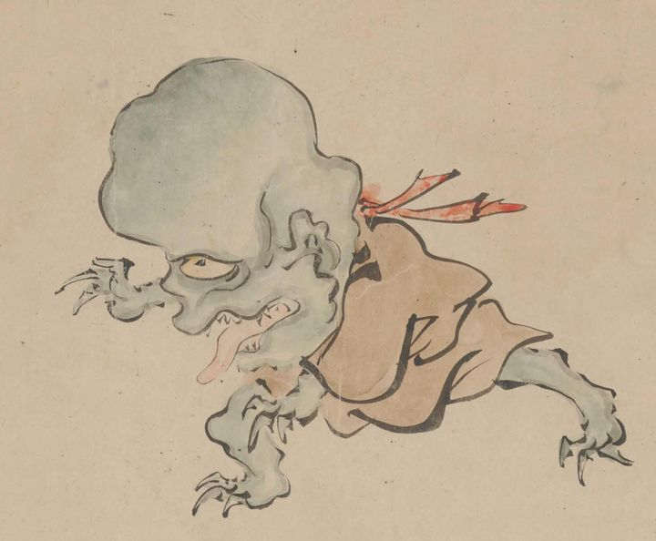

← 图鉴索引

青い色をした一つ目の妖怪が舌を出しながら逃げている。
出典：親書誌：U426_nichibunken_0435：［妖怪絵巻］／日付：2017／資源識別子：U426_nichibunken_0435_0001_0048
Copyright (c)2010- International Research Center for Japanese Studies, Kyoto, Japan. All rights reserved.